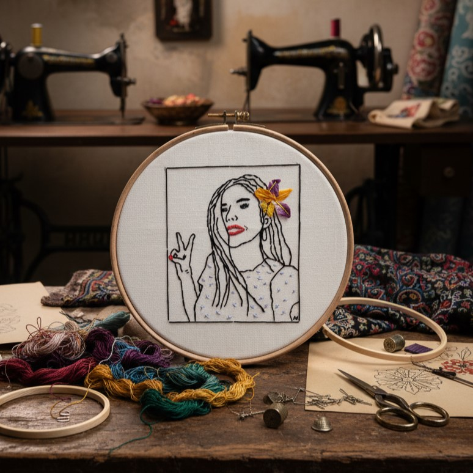

The Story Behind HoyThreads
I have been doing embroidery for some time, initially as a hobby. Over time, it became something I genuinely enjoyed and something that started attracting people's attention.

What I especially enjoy is turning drawings and ideas that I like into embroidery. I am particularly drawn to pop culture and anime, but I also really enjoy creating custom designs based on people's ideas. One of the things I love most is seeing people enjoy the finished pieces visually and knowing that something I made by hand can become a keepsake, a meaningful memory, or a thoughtful gift.
Why I Embroider?
I enjoy the process of taking a simple drawing, character, or idea and giving it a physical form through thread and stitch. Every piece takes time and attention, and that is part of what makes handmade embroidery special to me.
Have an Idea in Mind?
If there is something you'd love to see turned into embroidery, I'd love to hear about it.